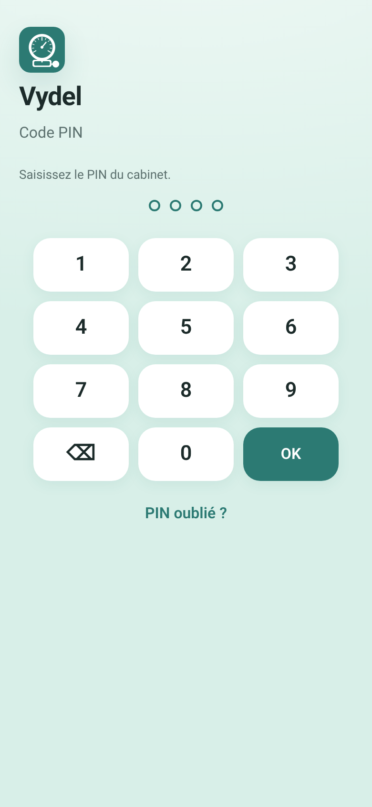
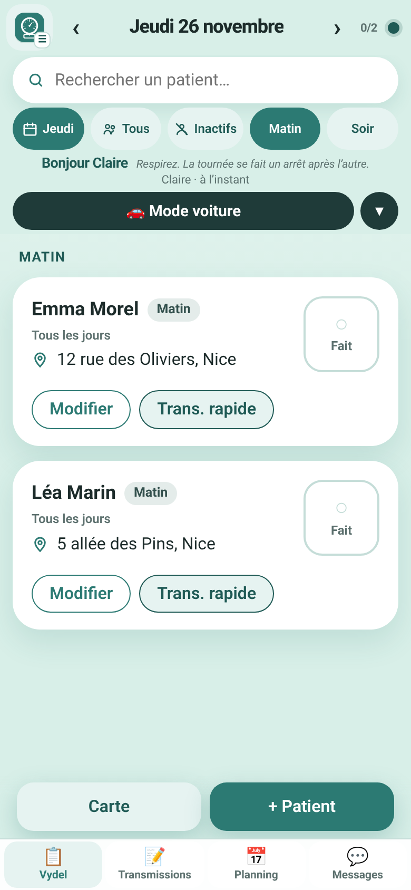
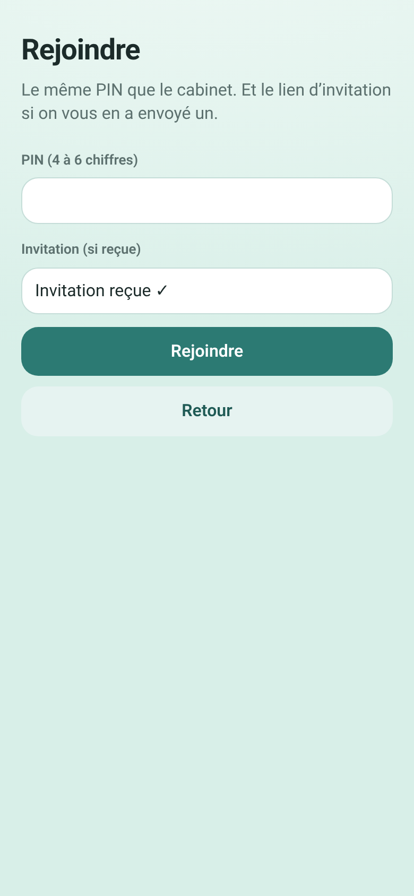
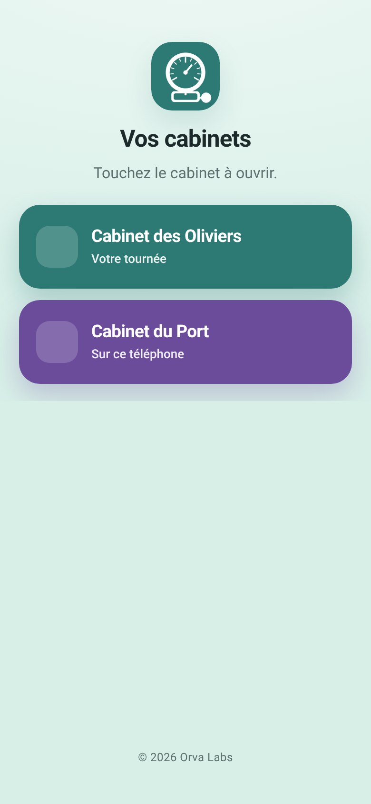
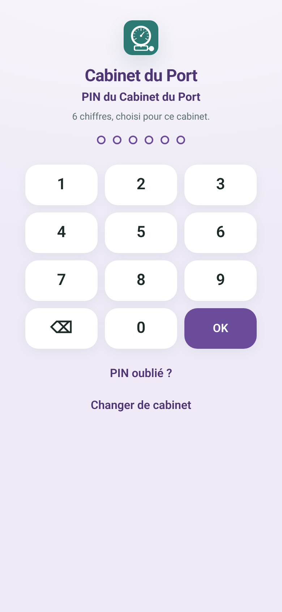
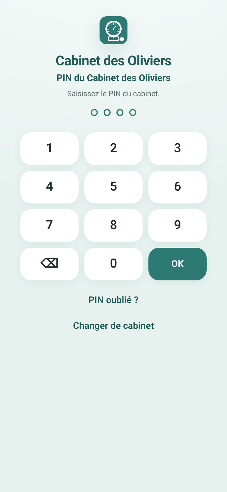

Tout est éparpillé
La tournée du jour vit dans trois fils de messages, un carnet, et ce que chacun a retenu.
L’app du cabinet IDEL
Vydel
Vydel aide les cabinets IDEL à partager la tournée, les transmissions, les alertes et les ordonnances. Ce n’est pas un dossier médical.
L’inscription se fait dans l’application, pas sur ce site. 14 jours d’essai gratuit.
Les infos de la journée se dispersent entre messages et papiers. L’ordre de passage, tu le décides à la main — puis il faut le redire à toute l’équipe.
La tournée du jour vit dans trois fils de messages, un carnet, et ce que chacun a retenu.
C’est normal : c’est toi qui ranges les passages. Encore faut-il que tout le cabinet ait le même ordre sous les yeux.
Quatre gestes du cabinet, au même endroit. Sans note clinique.
Tu ranges l’ordre des passages à la main. Toute l’équipe voit le même.
Ce que le cabinet doit se dire, au même endroit, sans fouiller les fils.
Une alerte que toute l’équipe doit voir, sans détail clinique.
Les ordonnances, retrouvées sans chercher dans les messages.
Vydel ne décide pas à ta place. Il donne à toute l’équipe le même ordre, celui que le cabinet a choisi.
L’ordre des patients, tu le décides à la main, comme aujourd’hui.
Tes collègues ont sous les yeux la tournée que le cabinet a choisie.
Transmissions, alertes et ordonnances accompagnent la journée, dans l’app.
Bientôt Aperçu
Tu interviens dans plus d’un cabinet ? Voici un aperçu du parcours pour en ajouter un autre sur le même téléphone, à partir d’un lien d’invitation. Ce n’est pas encore disponible dans l’application actuelle (v1.99.1). Les écrans viennent d’une version de test, avec des données fictives.
Après le lien d’invitation, le nouveau cabinet est gardé à part, sans rien changer au premier. Chaque cabinet garde son PIN, ses couleurs et sa tournée.
Fais défiler les écrans pour suivre le parcours.






Mieux vaut le dire franchement, dès cette page.
Vydel sert à l’organisation du cabinet, pas à tenir un dossier patient.
Il est pensé pour les infirmières et infirmiers libéraux qui travaillent en cabinet.
On n’y range pas de pathologie, de diagnostic ni de note clinique.
Essai gratuit de 14 jours, puis un tarif simple. L’essentiel de l’offre est rappelé ici. Le texte complet des conditions d’utilisation n’est pas encore publié.
14,99 € / mois
Après 14 jours d’essai gratuit.
Le règlement, payé à Orva Labs, se fait via un lien de paiement en ligne. Dans l’app, tu trouves la référence membre du cabinet. Le paiement est contrôlé à partir de cette référence, à la main. L’accès est débloqué sous 24 h, pas instantanément.
Un rappel t’avertit deux jours avant la fin (J-2). Ensuite, le travail est bloqué. L’action « Télécharger mes données » reste disponible pendant 30 jours, puis l’accès est entièrement bloqué.
Voir aussi ce qui se passe, et les conditions d’utilisation.
Vydel n’est pas un dossier médical. On n’y range pas de pathologie, de diagnostic ni de note clinique.
Le site vitrine est une page statique : pas de formulaire, pas de compte créé ici. Les données de l’application, elles, peuvent transiter par des services tiers. Le code PIN protège l’accès sur l’appareil, sans garantir à lui seul la confidentialité. Un retour envoyé depuis l’app peut partir en clair : n’y mets pas d’information de santé ni de donnée sensible.
Prix, essai, et ce que Vydel n’est pas.
14 jours d’essai gratuit, puis 14,99 € par mois pour le cabinet, payés à Orva Labs. Chaque associé paie aussi 14,99 € par mois pour son accès. Le remplaçant est gratuit.
L’inscription se fera dans l’application, pas sur ce site. L’essai de 14 jours sera ouvert prochainement, sans date annoncée ici. Tu n’as aucun formulaire à envoyer ici.
Via un lien de paiement en ligne, payé à Orva Labs. Tu utilises la référence membre du cabinet affichée dans l’app. Le paiement est contrôlé à la main. L’accès est débloqué sous 24 h, jamais de façon instantanée.
Un rappel à J-2, deux jours avant la fin. Ensuite, le travail est bloqué. Tu peux encore télécharger tes données pendant 30 jours, puis l’accès est entièrement bloqué.
Non. Vydel n’est pas un dossier médical, ni un lieu pour des diagnostics ou des notes cliniques.
Le texte complet n’est pas encore publié. L’essentiel de l’offre est rappelé sur la page conditions d’utilisation.
L’essai de 14 jours sera ouvert prochainement, sans date annoncée ici. Rien à remplir sur ce site.
L’inscription se fait dans l’application, pas sur ce site.